Data science communication
Lecture 23
Duke University
STA 199 Spring 2025
2025-04-17
While you wait
Go to your
aeproject in RStudio.Make sure all of your changes up to this point are committed and pushed, i.e., there’s nothing left in your Git pane.
Click Pull to get today’s application exercise file: ae-19-effective-dataviz.qmd.
Wait until you’re prompted to work on the application exercise during class before editing the file.
Telling a story
Setup
Multiple ways of telling a story
Sequential reveal: Motivation, then resolution
Instant reveal: Resolution, and hidden in it motivation
Simplicity vs. complexity
When you’re trying to show too much data at once you may end up not showing anything.
Never assume your audience can rapidly process complex visual displays
Don’t add variables to your plot that are tangential to your story
Don’t jump straight to a highly complex figure; first show an easily digestible subset (e.g., show one facet first)
Aim for memorable, but clear
Project note: Make sure to leave time to iterate on your plots after you practice your presentation. If certain plots or outputs are getting too wordy to explain, take time to simplify them!
Consistency vs. repetitiveness
Be consistent but don’t be repetitive.
Use consistent features throughout plots (e.g., same color represents same level on all plots)
Aim to use a different type of summary or visualization for each distinct analysis
Project note: If possible, ask a friend who is not in the class to listen to your presentation and then ask them what they remember. Then, ask yourself: is that what you wanted them to remember?
Your project plans
How are you telling your story?
Sequential reveal
Instant reveal
Our approach doesn’t fit either of these paradigms
No idea
Designing effective visualizations
Data
# A tibble: 5 × 2
category value
<chr> <dbl>
1 Cutting tools 0.03
2 Buildings and administration 0.22
3 Labor 0.31
4 Machinery 0.27
5 Workplace materials 0.17Keep it simple

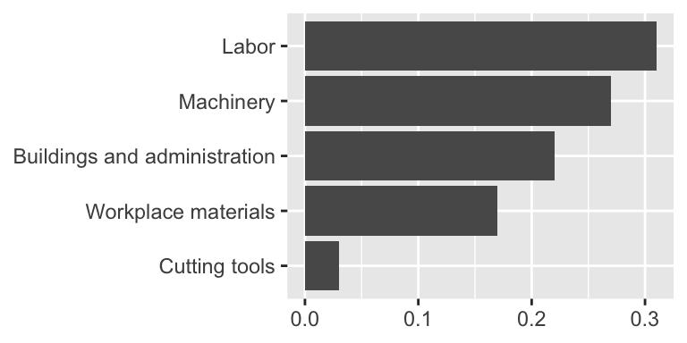
Judging relative area
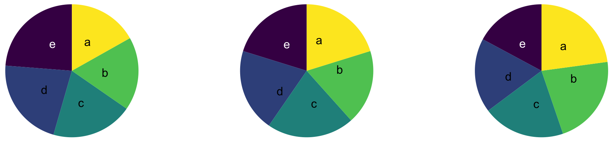

Use color to draw attention
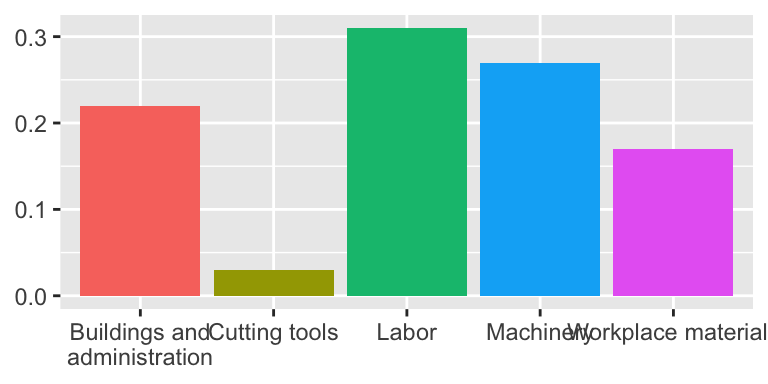
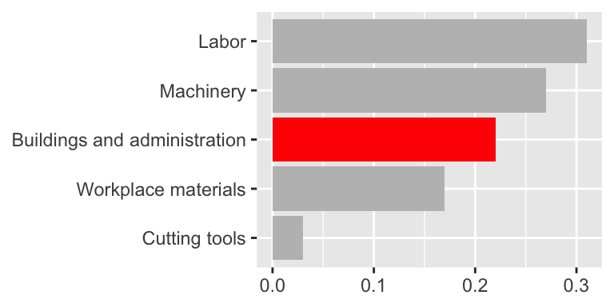
Play with themes for a non-standard look
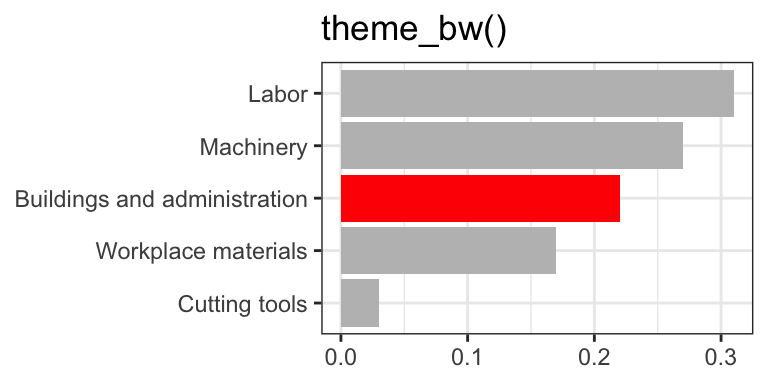
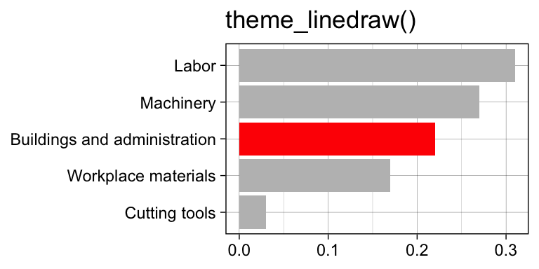
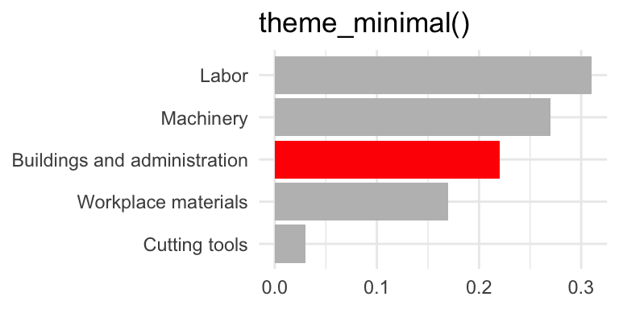
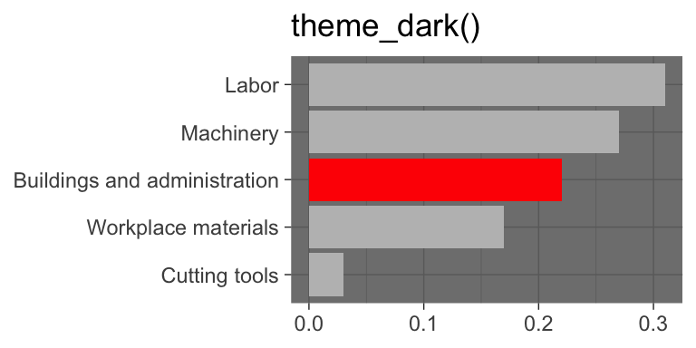
Go beyond ggplot2 themes – ggthemes
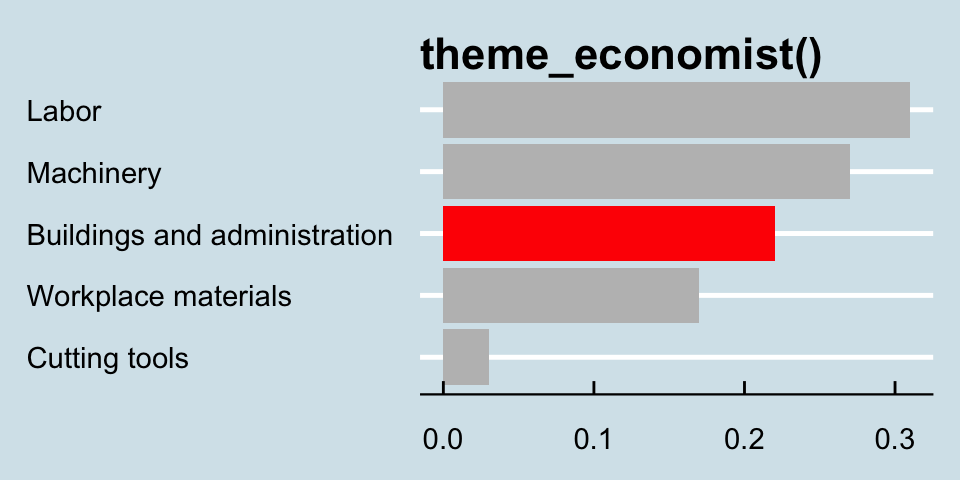
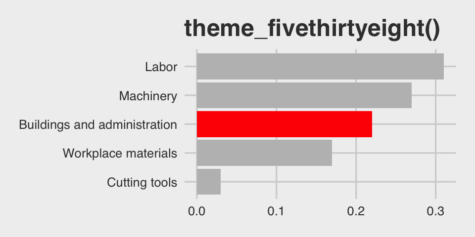
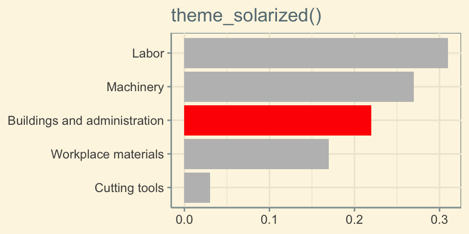
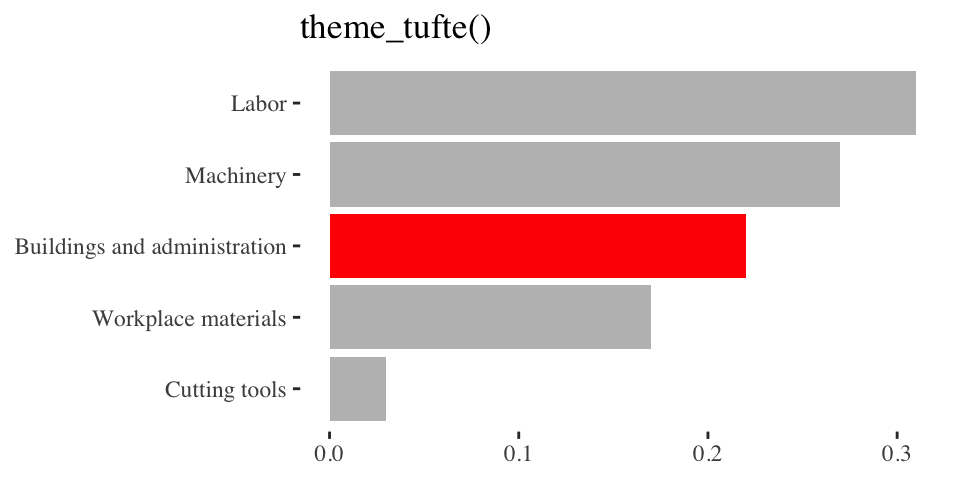
Tell a story


Leave out non-story details
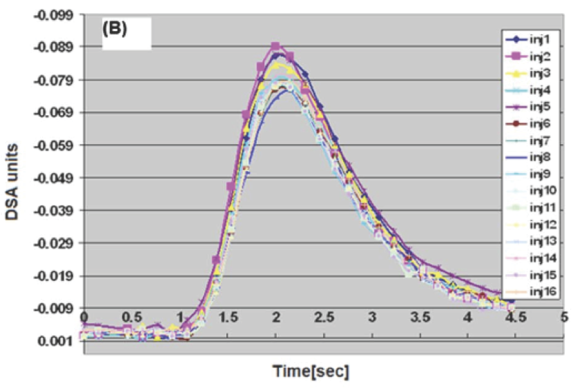
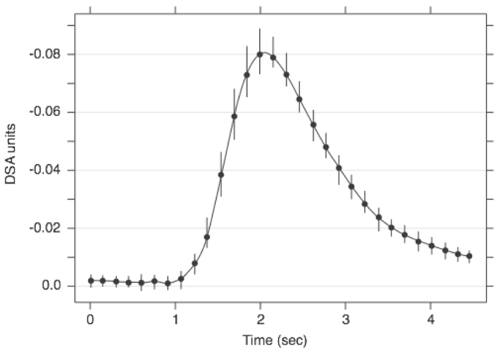
Order matters

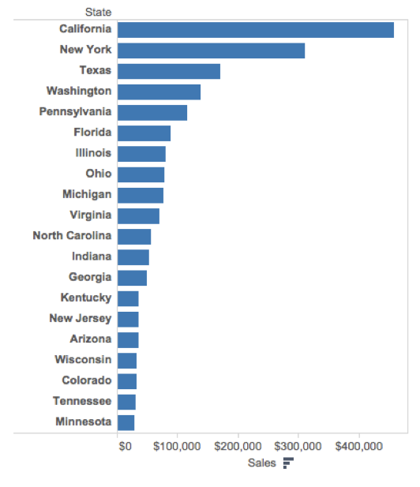
Clearly indicate missing data

Reduce cognitive load
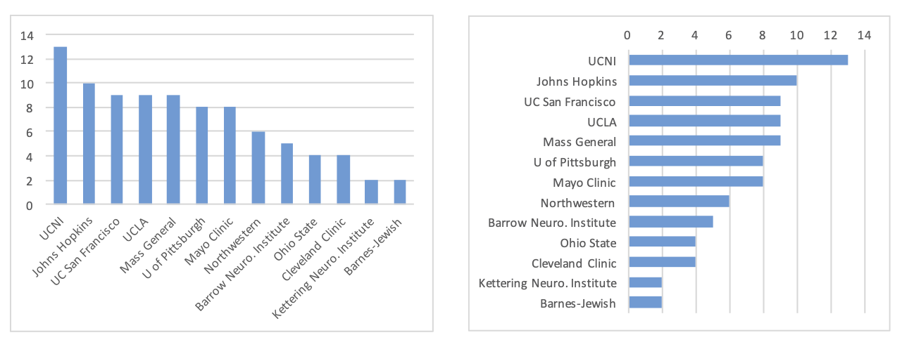
Use descriptive titles
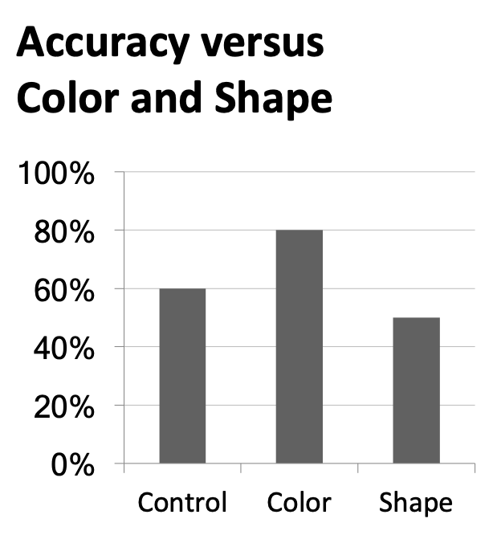

Annotate figures

Plot sizing and layout
Sample plots
Small fig-width
For a zoomed-in look
Large fig-width
For a zoomed-out look
fig-width affects text size
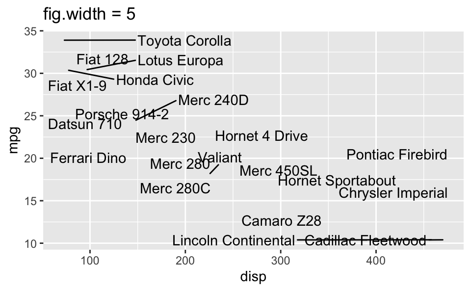
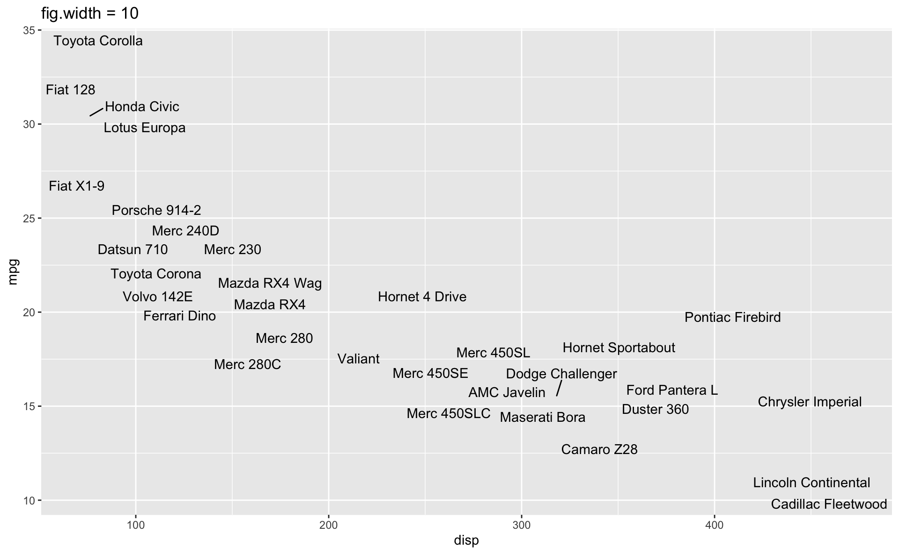
Multiple plots on a slide
First, ask yourself, must you include multiple plots on a slide? For example, is your narrative about comparing results from two plots?
If no, then don’t! Move the second plot to to the next slide!
If yes, use columns and sequential reveal.
Quarto
Writing your project report with Quarto
Figure sizing:
fig-width,fig-height, etc. in code chunks.Figure layout:
layout-ncolfor placing multiple figures in a chunk.Further control over figure layout with the patchwork package.
Chunk options around what makes it in your final report:
message,echo, etc.Cross referencing figures and tables.
Adding footnotes and citations.
Cross referencing figures
As seen in Figure 1, there is a positive and relatively strong relationship between body mass and flipper length of penguins.
Cross referencing tables
The regression output is shown in Table 1.
penguins_fit <- linear_reg() |>
fit(body_mass_g ~ flipper_length_mm, data = penguins)
tidy(penguins_fit) |>
knitr::kable(digits = 3)| term | estimate | std.error | statistic | p.value |
|---|---|---|---|---|
| (Intercept) | -5780.831 | 305.815 | -18.903 | 0 |
| flipper_length_mm | 49.686 | 1.518 | 32.722 | 0 |
The regression output is shown in @tbl-penguins-lm.
```{r}
#| label: tbl-penguins-lm
#| tbl-cap: The regression output for predicting body mass from flipper length of penguins.
penguins_fit <- linear_reg() |>
fit(body_mass_g ~ flipper_length_mm, data = penguins)
tidy(penguins_fit) |>
knitr::kable(digits = 3)
```Take A Sad Plot & Make It Better
Going the extra mile

Trends instructional staff employees in universities
The American Association of University Professors (AAUP) is a nonprofit membership association of faculty and other academic professionals. This report by the AAUP shows trends in instructional staff employees between 1975 and 2011, and contains the following image. What trends are apparent in this visualization?

ae-19-effective-dataviz
Go to your ae project in RStudio.
If you haven’t yet done so, make sure all of your changes up to this point are committed and pushed, i.e., there’s nothing left in your Git pane.
If you haven’t yet done so, click Pull to get today’s application exercise file: ae-19-effective-dataviz.qmd.
Work through the application exercise in class, and render, commit, and push your edits.
Data prep
Code
library(tidyverse)
library(scales)
staff <- read_csv("data/instructional-staff.csv")
staff_long <- staff |>
pivot_longer(
cols = -faculty_type, names_to = "year",
values_to = "percentage"
) |>
mutate(
percentage = as.numeric(percentage),
faculty_type = fct_relevel(
faculty_type,
"Full-Time Tenured Faculty",
"Full-Time Tenure-Track Faculty",
"Full-Time Non-Tenure-Track Faculty",
"Part-Time Faculty",
"Graduate Student Employees"
),
year = as.numeric(year),
faculty_type_color = if_else(faculty_type == "Part-Time Faculty", "firebrick3", "gray40")
)Pick a purpose
Code
p <- ggplot(
staff_long,
aes(
x = year,
y = percentage,
color = faculty_type_color, group = faculty_type
)
) +
geom_line(linewidth = 1, show.legend = FALSE) +
labs(
x = NULL,
y = "Percent of Total Instructional Staff",
color = NULL,
title = "Trends in Instructional Staff Employment Status, 1975-2011",
subtitle = "All Institutions, National Totals",
caption = "Source: US Department of Education, IPEDS Fall Staff Survey"
) +
scale_y_continuous(labels = label_percent(accuracy = 1, scale = 1)) +
scale_color_identity() +
theme(
plot.caption = element_text(size = 8, hjust = 0),
plot.margin = margin(0.1, 0.6, 0.1, 0.1, unit = "in")
) +
coord_cartesian(clip = "off") +
annotate(
geom = "text",
x = 2012, y = 41, label = "Part-Time\nFaculty",
color = "firebrick3", hjust = "left", size = 5
) +
annotate(
geom = "text",
x = 2012, y = 13.5, label = "Other\nFaculty",
color = "gray40", hjust = "left", size = 5
) +
annotate(
geom = "segment",
x = 2011.5, xend = 2011.5,
y = 7, yend = 20,
color = "gray40", linetype = "dotted"
)
p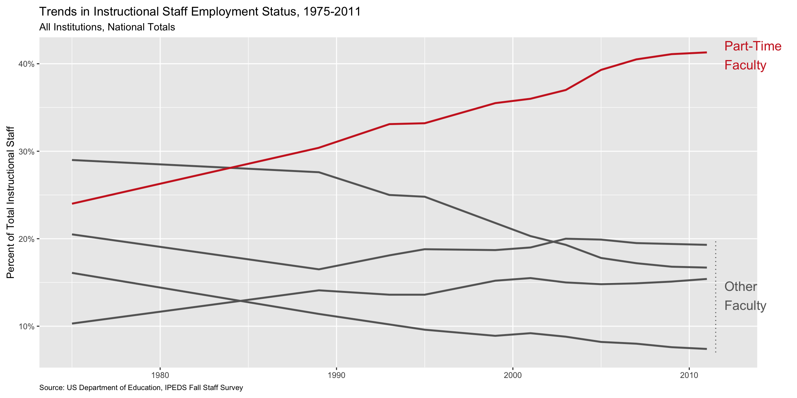
Use labels to communicate the message
Code
p +
labs(
title = "Instruction by part-time faculty on a steady increase",
subtitle = "Trends in Instructional Staff Employment Status, 1975-2011\nAll Institutions, National Totals",
caption = "Source: US Department of Education, IPEDS Fall Staff Survey",
y = "Percent of Total Instructional Staff",
x = NULL
)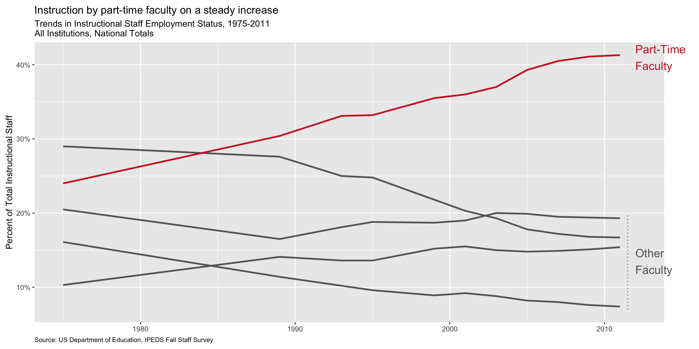
Simplify
Code
p +
labs(
title = "Instruction by part-time faculty on a steady increase",
subtitle = "Trends in Instructional Staff Employment Status, 1975-2011\nAll Institutions, National Totals",
caption = "Source: US Department of Education, IPEDS Fall Staff Survey",
y = "Percent of Total Instructional Staff",
x = NULL
) +
theme(panel.grid.minor = element_blank())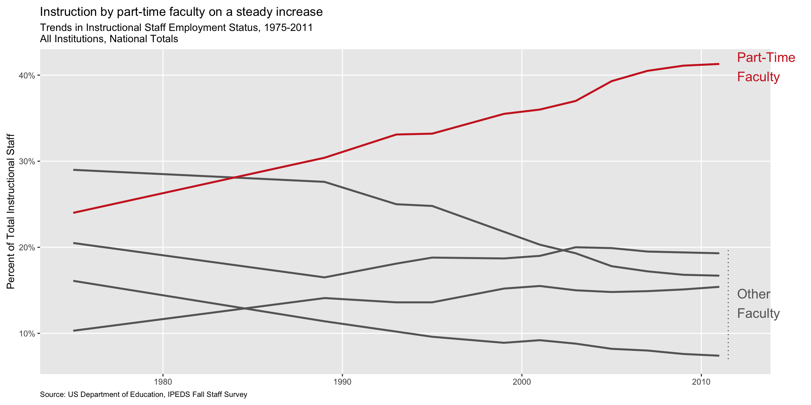
Summary
- Represent percentages as parts of a whole
- Place variables representing time on the x-axis when possible
- Pay attention to data types, e.g., represent time as time on a continuous scale, not years as levels of a categorical variable
- Prefer direct labeling over legends
- Use accessible colors
- Use color to draw attention
- Pick a purpose and label, color, annotate for that purpose
- Communicate your main message directly in the plot labels
- Simplify before you call it done (a.k.a. “Before you leave the house, look in the mirror and take one thing off”)